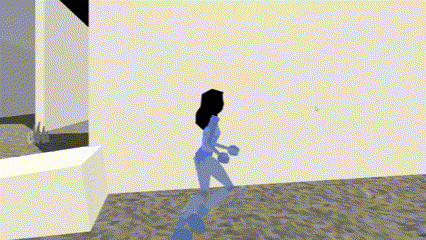
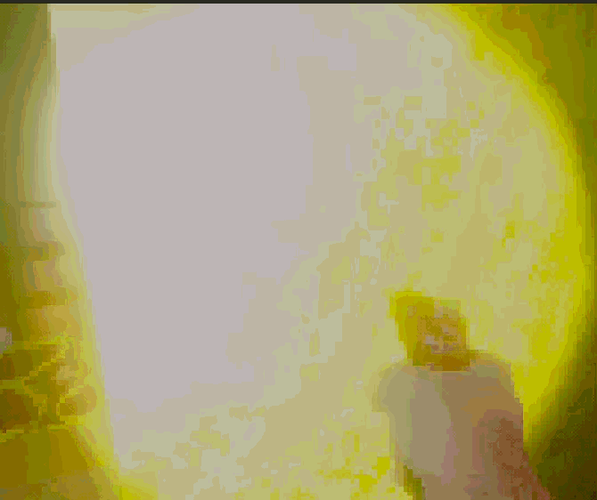
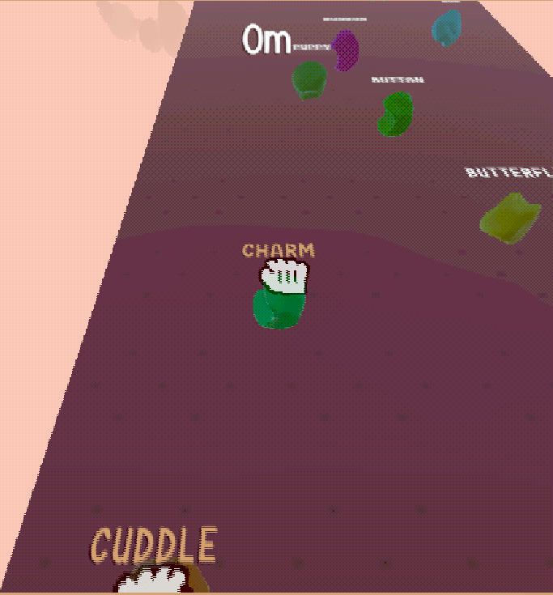
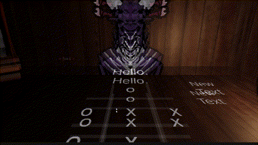
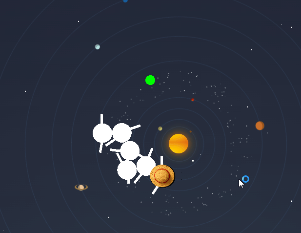
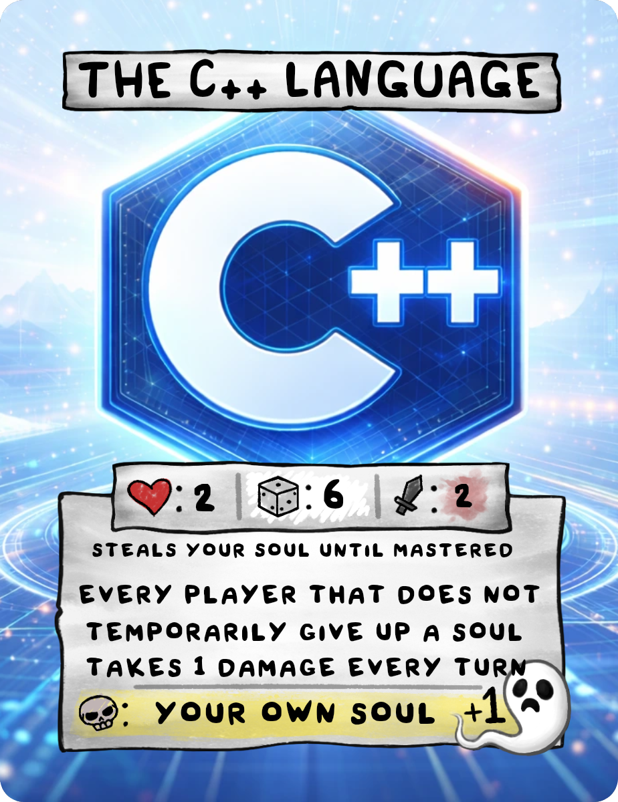

i make games ... sometimes they work
software engineer & game developer. i mess around with unity, c++, and flutter — usually building stuff that's a bit weird, a bit broken, and (hopefully) a bit fun. have a look around.

a 3rd person game where geometry doesn't behave. corridors loop. rooms are bigger inside. walls go on forever. playable in the browser if you fancy a quick existential crisis.
Inspired by games like Viewfinder where you take a photo and it builds the world — I wanted to see what I could accomplish on my own using looping geometry instead.
Realising most of the "illusion" was just deceiving the player by deceptively smoothly teleporting them to make it look endless. No fancy shaders needed.
The effects were pretty basic so this one went well all together — map design was the hardest part, getting layouts that sell the loop without giving the trick away.
Implementing proper lighting and more detail to make the spaces feel real instead of grey-boxed.

my most ambitious project yet — a first person shooter demo built almost entirely from scratch, down to a viewmodel made from a photo of my own hand holding a toy gun.
Getting creative with the gun — I used my own picture of a toy gun in my hand as the first person viewmodel instead of grabbing an asset pack. Everything in this project is homemade.
Level design, full stop. I had zero experience blocking out a map, and every piece of art was made by me, which was incredibly time consuming.
Now that I've got a first pass under my belt, I want to refine the level geometry and add proper gun feedback — recoil, hit reactions, sound.

type your way to the top in this cozy climbing adventure. a platformer where you type words to move — published and playable in the browser on itch.io.
This was my first published game — actually putting something out there for people to find and play rather than just having it sit in a repo. The typing-as-movement mechanic clicked really nicely with the climbing theme.
Balancing the word difficulty against the platforming speed so it feels fair. Too easy and there's no tension, too hard and the climbing stalls out and stops being fun.
More word categories and maybe a difficulty curve that adapts to how fast you're actually typing.

a little monster called kabal challenges you to minigames. you can also have an actual conversation with him — there's a local llm wired in if you set one up. it's silly. that's the point.
Giving Kabal a personality. Wiring in a character you can actually talk to between games made the whole thing feel less like a tech demo and more like a little world.
Getting a local LLM to behave reliably inside a Unity build — keeping responses fast, in-character, and not wildly off-topic took a fair bit of prompt tuning.
More minigames in the rotation, and tightening up the conversation system so Kabal reacts to what's actually happening in-game.

a centipede that follows your mouse around your actual desktop in a transparent always-on-top window. eats apples. grows. gets hats. inverse kinematics doing all the work.
Watching it actually move like a centipede. Once the IK chain was behaving segment-by-segment it stopped looking like a stack of circles and started looking alive.
Writing inverse kinematics from scratch in C++ with no engine to lean on — lots of trial and error getting the chain to follow smoothly without jittering at sharp turns.
The transparent, always-on-top desktop window turns it from a demo into an actual desktop pet that lives on top of everything else you're doing.

a tool for making custom cards for the binding of isaac: four souls card game. when you're sick of the base set. works on basically every platform.
Building something people actually sit down and use to make their own content rather than just play through once. It's a tool, not a game — and that's satisfying in a different way.
Getting card layouts to render consistently across platforms. Flutter makes cross-platform easy in theory, but precise pixel-perfect card art is a different story.
More card templates and export options, plus cleaning up the workflow so building a full custom set takes less clicking around.
i'm ano lawa — software engineer by day, game dev by night (and also sometimes by day).
mostly i work in unity & c#, but i'll reach for c++ when i need to get closer to the metal, or flutter when something needs to run everywhere at once.
outside of code i like card games, gaming, and 3d modelling in blender. i don't really touch grass.